Abalone R PROJECT REPORT
Download original formatABALONE R PROJECT REPORT
1A.) Use summary() to obtain and present descriptive statistics from mydata. Use table() to present a frequency table using CLASS and RINGS. There should be 115 cells in the table you present .
Code:
# Load data
mydata <- read.csv("C:/Users/ceofl/Desktop/analystbhatta fiver/data.csv")
# Verify data
print(head(mydata))
# Summary statistics
print(summary(mydata))
# Frequency table for CLASS and RINGS
table_class_rings <- table(mydata$CLASS, mydata$RINGS)
print(table_class_rings)
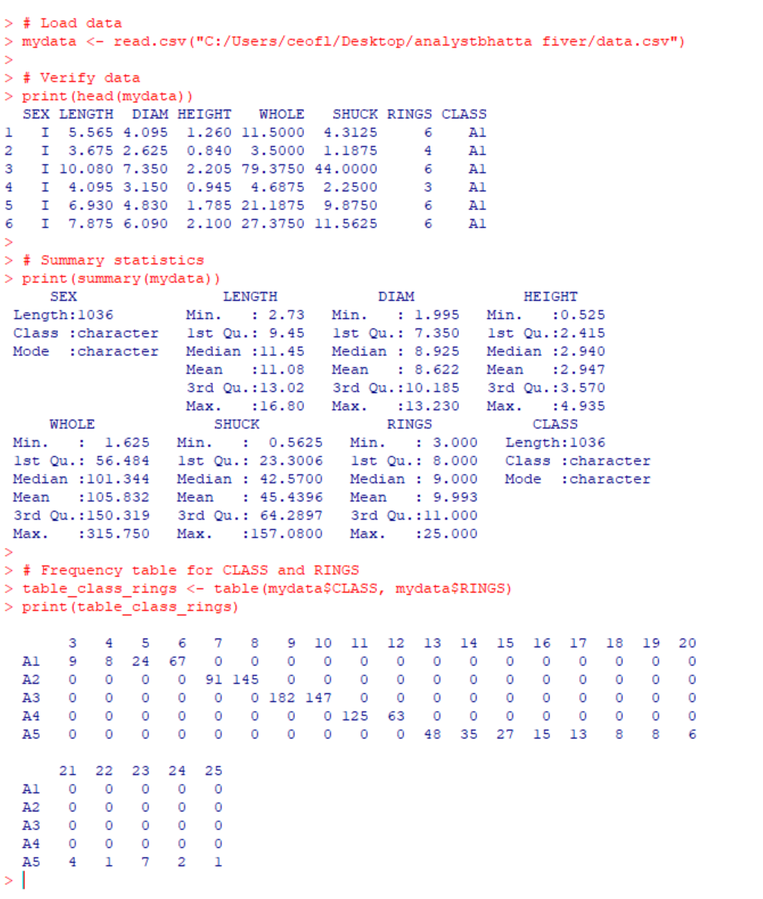
b) Briefly discuss the variable types and distributional implications such as potential skewness and outliers
There are three categories of sex (I,M,F). LENGTH, DIAM, HEIGHT, WHOLE, SHUCK measure size and weight of the abalone. RINGS represent the number of rings and CLASS highlights the class or group.
WHOLE and SHUCK show potential right skewness (mean > median), meaning most abalones are smaller, with a few heavy ones pulling the distribution to the right. There may be outliers in WHOLE and SHUCK weights, as indicated by the large differences between the median and maximum values (e.g., WHOLE has a max value of 315.75 compared to a median of 101.34). The RINGS variable are the closest thing we have to discrete values, with gaps between certain counts, making it good for counting and analysis. SEX and CLASS are non-numerical variables used to group and categorize abalones. Their frequency distributions can reveal population
c)Generate a table of counts using SEX and CLASS. Add margins to this table (Hint: There should be 15 cells in this table plus the marginal totals. Apply *table()* first, then pass the table object to *addmargins()* Lastly, present a barplot of these data; ignoring the marginal totals. Discuss the sex distribution of abalones.
The Code:
# Table with margins
table_sex_class <- table(mydata$SEX, mydata$CLASS)
addmargins(table_sex_class)
# Barplot without margins
barplot(table(mydata$SEX, mydata$CLASS), beside = TRUE, legend = TRUE)
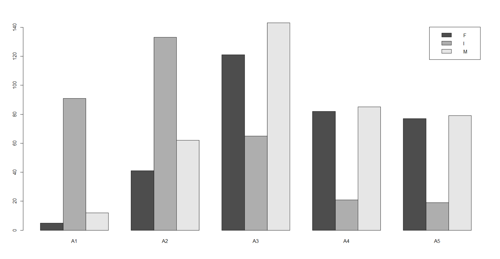
Class A1 have the most infants by far and there are also very few females and males. Class A2 is dominated by females and reflects the survival patterns of this class. Class A3 has a more balanced distribution, all sexes are well represented in this class. Class A4 & A5 are very similar with far fewer infants, indicating the primary presence of older mature abalones. The distribution suggests that males may have a longer lifespan or grow larger, as they are overrepresented in the higher classes. Females may mature earlier and are more concentrated in intermediate classes, possibly due to reproductive priorities. The decline of infants across higher classes indicates high mortality or slower growth rates, which limits their progression to higher classes.
d)What stands out about the distribution of abalones by CLASS?
There’s clearly an uneven class distribution, A3 and A2, have more abalones compared to A1 and A5. A1 have the fewest abalones. A2 and A3, skewed toward younger abalones indicated by the significance of infants. The variation in class counts suggests some classes may represent age stages or different physical growth patterns. Classes with more infants might reflect younger populations, while higher-class labels (e.g., A4 and A5) seem to include more adults (M or F).
e) Select a simple random sample of 200 observations from “mydata” and identify this sample as “work.” Use set.seed(123) prior to drawing this sample. Do not change the number 123. Note that sample() “takes a sample of the specified size from the elements of x.” We cannot sample directly from “mydata.”
Code:
# Set the seed for reproducibility
set.seed(123)
# Random sample of row indices from mydata
sample_indices <- sample(1:nrow(mydata), size = 200, replace = FALSE)
# sampled indices to create the "work" dataset
work <- mydata[sample_indices, ]
# View the first few rows of the sampled dataset
head(work)
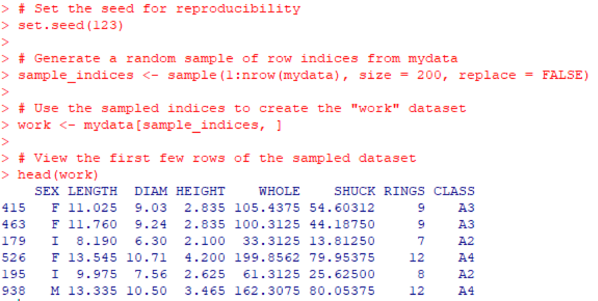
2) a. Use "mydata" to plot WHOLE versus VOLUME. Color code data points by CLASS
Code: # Convert CLASS to a factor
mydata$CLASS <- as.factor(mydata$CLASS)
# Plot using numeric color codes based on CLASS levels
plot(
mydata$VOLUME,
mydata$WHOLE,
col = as.numeric(mydata$CLASS), # Use numeric codes for color
pch = 19, # Solid circle for points
xlab = "Volume",
ylab = "Whole Weight",
main = "Whole Weight vs Volume by Class"
)
# legend to match colors with CLASS
legend(
"topright",
legend = levels(mydata$CLASS),
col = 1:length(levels(mydata$CLASS)),
pch = 19
)
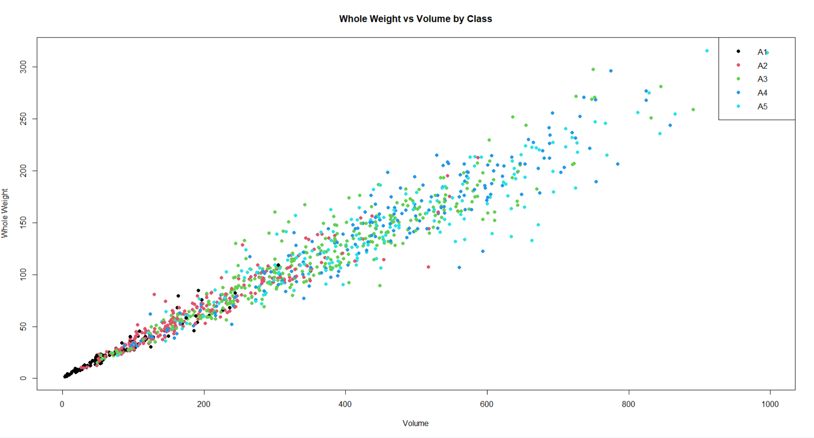
b) Use “mydata” to plot SHUCK versus WHOLE with WHOLE on the horizontal axis. Color code data points by CLASS. As an aid to interpretation, determine the maximum value of the ratio of SHUCK to WHOLE. Add to the chart a straight line with zero intercept using this maximum value as the slope of the line. If you are using the ‘base R’ plot() function, you may use abline() to add this line to the plot. Use help(abline) in R to determine the coding for the slope and intercept arguments in the functions. If you are using ggplot2 for visualizations, geom_abline() should be used.
Code:
# Maximum ratio of SHUCK to WHOLE
max_ratio <- max(mydata$SHUCK / mydata$WHOLE, na.rm = TRUE)
print(max_ratio) # Display the max ratio
# Plot SHUCK versus WHOLE with color coding by CLASS
plot(
mydata$WHOLE,
mydata$SHUCK,
col = as.numeric(mydata$CLASS),
pch = 19,
xlab = "Whole Weight",
ylab = "Shucked Weight",
main = "Shucked Weight vs Whole Weight by Class"
)
# Straight line with zero intercept and slope as max_ratio
abline(a = 0, b = max_ratio, col = "red", lwd = 2)
# Legend to match colors with CLASS
legend(
"topright",
legend = levels(mydata$CLASS),
col = 1:length(levels(mydata$CLASS)),
pch = 19
)
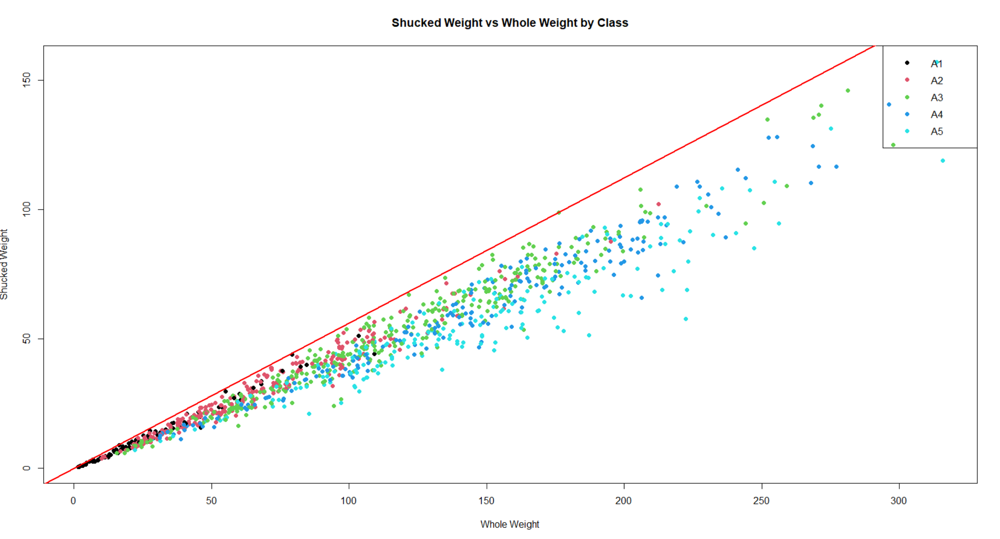
c) How does the variability in this plot differ from the plot in (a)? Compare the two displays. Keep in mind that SHUCK is a part of WHOLE. Consider the location of the different age classes.
The points are more spread out below the red line, indicating that not all of the whole weight translates proportionally to shucked weight. The WHOLE vs VOLUME plot showed an almost linear relationship because both variables grow in a proportional manner as the abalone develops, there is less deviation in this plot, as volume and whole weight are more strongly correlated. In the SHUCK vs WHOLE plot there is more variability, especially across different age classes, because not all whole weight translates equally into shucked weight These plots together suggest that muscle development (shuck weight) grows non-linearly compared to the total body size.
3.a) Use "mydata" to create a multi-figured plot with histograms, boxplots and Q-Q plots of RATIO differentiated by sex. This can be done using *par(mfrow = c(3,3))* and base R or *grid.arrange()* and ggplot2. The first row would show the histograms, the second row the boxplots and the third row the Q-Q plots. Be sure these displays are legible.
Code:
# Calculate the RATIO
mydata$RATIO <- mydata$SHUCK / mydata$WHOLE
# 3x3 plotting layout
par(mfrow = c(3, 3), mar = c(4, 4, 2, 1))
# Unique sexes in the data
sexes <- unique(mydata$SEX)
# First row: Histograms of RATIO by SEX
for (sex in sexes) {
hist(mydata$RATIO[mydata$SEX == sex],
main = paste("Histogram:", sex),
xlab = "RATIO",
col = "lightblue",
border = "black")
}
# Second row: Boxplots of RATIO by SEX
for (sex in sexes) {
boxplot(mydata$RATIO[mydata$SEX == sex],
main = paste("Boxplot:", sex),
ylab = "RATIO")
}
# Third row: Q-Q Plots of RATIO by SEX
for (sex in sexes) {
qqnorm(mydata$RATIO[mydata$SEX == sex],
main = paste("Q-Q Plot:", sex))
qqline(mydata$RATIO[mydata$SEX == sex], col = "red")
}
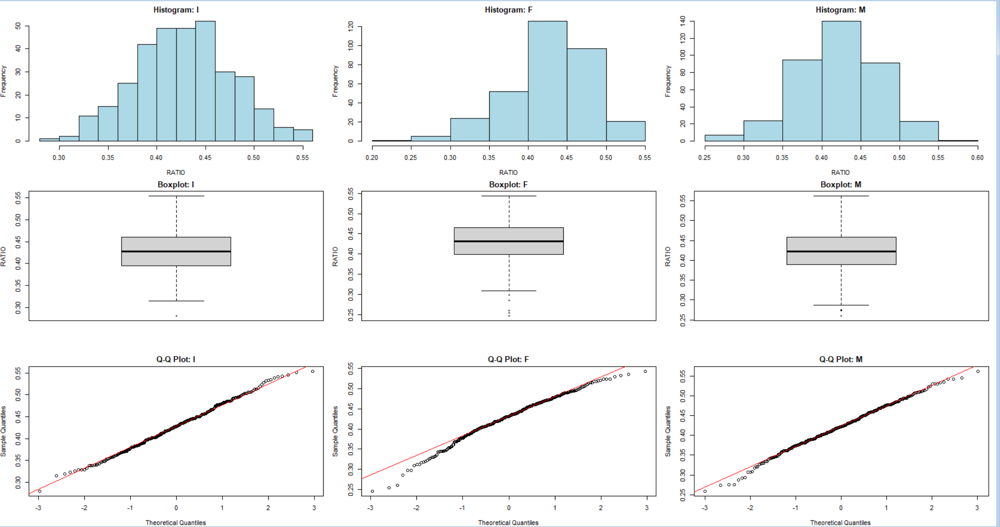
b) Compare the displays. How do the distributions compare to normality? Take into account the criteria discussed in the sync sessions to evaluate non-normality.
1. Histograms:
Infants (I):
The distribution appears fairly symmetric, but with slight left skewness (a longer left tail).
Most values are concentrated around 0.4 to 0.45.
Females (F):
The histogram shows slight right skewness, with a few lower RATIO values extending the left tail.
The peak is also around 0.4 to 0.45.
Males (M):
Similar to the infants, the male group appears symmetric with a slight concentration around 0.4 to 0.45.
2. Boxplots:
Outliers are visible in each group (marked as points below the whiskers).
Females (F) show more outliers toward the lower end of the distribution.
Infants (I) and Males (M) also show some outliers, though they are fewer in number.
The middle 50% (IQR) of the RATIO values for each sex is reasonably symmetric, but the outliers indicate some deviation from normality.
3. Q-Q Plots:
Q-Q Plots for Infants (I):
The points mostly follow the red line, suggesting a distribution close to normal.
Minor deviations at the tails indicate some slight non-normality (likely due to a few outliers).
Q-Q Plots for Females (F):
There are some deviations from the red line at both the lower and upper tails, suggesting that the distribution is lightly skewed and has heavier tails compared to a normal distribution.
Q-Q Plots for Males (M):
This group also follows the red line closely, though there are slight deviations at the tails, indicating some non-normality.
Summary of Normality:
Infants and Males:
Their distributions appear closer to normal, with minor deviations at the tails.
Females:
The distribution for females shows more deviations from normality, particularly in the tails, which suggests a slight skew.
Outliers:
Each group has outliers, which affect the normality and are visible in both the boxplots and the Q-Q plots.
Conclusion:
While the distributions for infants and males are reasonably close to normal, the distribution for females exhibits more deviation, particularly with outliers and skewness.
These results suggest that outliers and tail deviations play a role in the non-normality of the data.
c) The boxplots in (3)a) indicate that there are outlying RATIOs for each sex. boxplot.stats() can be used to identify outlying values of a vector. Present the abalones with these outlying RATIO values along with their associated variables in “mydata”. Display the observations by passing a data frame to the kable() function. Basically, we want to output those rows of “mydata” with an outlying RATIO, but we want to determine outliers looking separately at infants, females and males
Code:
# Function to extract outliers for a specific sex
get_outliers_by_sex <- function(sex) {
outliers <- boxplot.stats(mydata$RATIO[mydata$SEX == sex])$out
mydata[mydata$SEX == sex & mydata$RATIO %in% outliers, ]
}
# Outliers for each sex
outliers_infants <- get_outliers_by_sex("I")
outliers_females <- get_outliers_by_sex("F")
outliers_males <- get_outliers_by_sex("M")
# outlier observations combined into one data frame
all_outliers <- rbind(outliers_infants, outliers_females, outliers_males)
# outliers displayed using kable()
library(knitr)
kable(all_outliers, caption = "Abalones with Outlying RATIO Values by Sex")
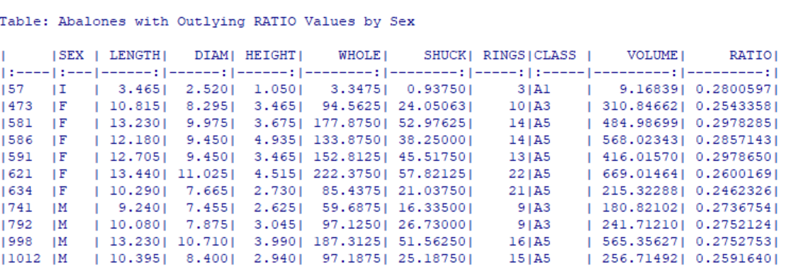
d) What are your observations regarding the results in (3)(c)
For infants there is only one outlier (Row 57) with a low RATIO of 0.2801. This suggests that some younger abalones may have a disproportionately low shuck weight relative to their whole weight, potentially due to incomplete muscle development.
For females six outliers are identified (Rows 473, 581, 586, 591, 621, 634). All these abalones show low RATIO values (around 0.246–0.297). This could indicate that for some females, the edible (shuck) part constitutes a smaller portion of their total weight. The males have Four outliers (Rows 741, 792, 998, 1012) are identified with RATIO values in the 0.259–0.275 range. Similar to females, these low RATIO values suggest that some males have relatively lower muscle mass compared to their overall body weight. Females and males in the A5 class show several outliers, indicating that outliers are not restricted to younger abalones but also occur among mature individuals. The presence of outliers across all sexes indicates individual variability in muscle mass relative to total weight. Factors such as environment, diet, or health could contribute to this variation.
4)a) With "mydata," display side-by-side boxplots for VOLUME and WHOLE, each differentiated by CLASS There should be five boxes for VOLUME and five for WHOLE. Also, display side-by-side scatterplots: VOLUME and WHOLE versus RINGS. Present these four figures in one graphic: the boxplots in one row and the scatterplots in a second row. Base R or ggplot2 may be used.
Code:
# Setting up plotting area: 2 rows and 2 columns
par(mfrow = c(2, 2), mar = c(4, 4, 2, 1)) # Adjust margins for neat layout
# 1st plot: Boxplot of VOLUME by CLASS
boxplot(mydata$VOLUME ~ mydata$CLASS,
main = "Boxplot of Volume by Class",
ylab = "Volume",
xlab = "Class",
col = "lightblue")
# 2nd plot: Boxplot of WHOLE by CLASS
boxplot(mydata$WHOLE ~ mydata$CLASS,
main = "Boxplot of Whole Weight by Class",
ylab = "Whole Weight",
xlab = "Class",
col = "lightgreen")
# 3rd plot: Scatterplot of VOLUME vs RINGS
plot(mydata$RINGS, mydata$VOLUME,
main = "Volume vs Rings",
xlab = "Rings",
ylab = "Volume",
pch = 19, col = "blue")
# 4th plot: Scatterplot of WHOLE vs RINGS
plot(mydata$RINGS, mydata$WHOLE,
main = "Whole Weight vs Rings",
xlab = "Rings",
ylab = "Whole Weight",
pch = 19, col = "darkgreen")
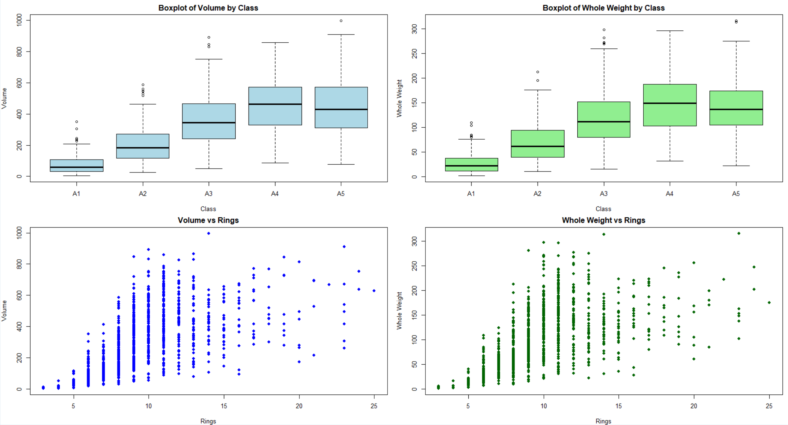
b) How well do you think these variables would perform as predictors of age? Explain.
Volume shows a positive but non-linear correlation with age, meaning it could work as a predictor, though it may not be precise for very old abalones due to variability. Whole weight performs similarly to volume as a predictor of age—it shows a general positive trend but with high variability, making it less reliable for predicting age with accuracy, especially in older abalones. A more accurate model might require the inclusion of additional variables (e.g., shuck weight, diameter) or the use of more sophisticated statistical techniques.
5.a) Use aggregate() with “mydata” to compute the mean values of VOLUME, SHUCK and RATIO for each combination of SEX and CLASS. Then, using matrix(), create matrices of the mean values. Using the “dimnames” argument within matrix() or the rownames() and colnames() functions on the matrices, label the rows by SEX and columns by CLASS. Present the three matrices (Kabacoff Section 5.6.2, p. 110-111). The kable() function is useful for this purpose. You do not need to be concerned with the number of digits presented.
Code:
# Mean values of VOLUME, SHUCK, and RATIO by SEX and CLASS
mean_values <- aggregate(cbind(VOLUME, SHUCK, RATIO) ~ SEX + CLASS, data = mydata, FUN = mean)
# Create matrices for each metric: VOLUME, SHUCK, and RATIO
volume_matrix <- matrix(mean_values$VOLUME,
nrow = length(unique(mydata$SEX)),
ncol = length(unique(mydata$CLASS)),
dimnames = list(unique(mydata$SEX), unique(mydata$CLASS)))
shuck_matrix <- matrix(mean_values$SHUCK,
nrow = length(unique(mydata$SEX)),
ncol = length(unique(mydata$CLASS)),
dimnames = list(unique(mydata$SEX), unique(mydata$CLASS)))
ratio_matrix <- matrix(mean_values$RATIO,
nrow = length(unique(mydata$SEX)),
ncol = length(unique(mydata$CLASS)),
dimnames = list(unique(mydata$SEX), unique(mydata$CLASS)))
# Loading knitr package for kable() function
if (!require(knitr)) {
install.packages("knitr")
library(knitr)
} else {
library(knitr)
}
# Display the matrices using kable()
cat("Volume Matrix:\n")
kable(volume_matrix, caption = "Mean Volume by SEX and CLASS")
cat("\nShuck Matrix:\n")
kable(shuck_matrix, caption = "Mean Shuck Weight by SEX and CLASS")
cat("\nRatio Matrix:\n")
kable(ratio_matrix, caption = "Mean Ratio by SEX and CLASS")
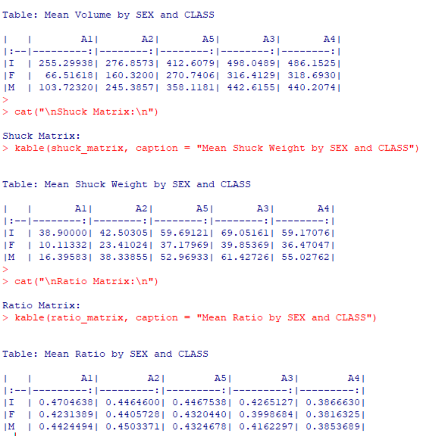
b) Present three graphs. Each graph should include three lines, one for each sex. The first should show mean RATIO versus CLASS; the second, mean VOLUME versus CLASS; the third, mean SHUCK versus CLASS. This may be done with the 'base R' *interaction.plot()* function or with ggplot2 using *grid.arrange()
Code:
# Set up the plotting area: 3 rows and 1 column
par(mfrow = c(3, 1), mar = c(4, 4, 2, 1)) # Adjust margins for layout
# 1st plot: Mean RATIO vs CLASS for each SEX
interaction.plot(
mean_values$CLASS, mean_values$SEX, mean_values$RATIO,
type = "b", col = c("red", "blue", "green"), pch = 19,
xlab = "Class", ylab = "Mean RATIO",
main = "Mean RATIO vs Class by Sex"
)
# 2nd plot: Mean VOLUME vs CLASS for each SEX
interaction.plot(
mean_values$CLASS, mean_values$SEX, mean_values$VOLUME,
type = "b", col = c("red", "blue", "green"), pch = 19,
xlab = "Class", ylab = "Mean VOLUME",
main = "Mean VOLUME vs Class by Sex"
)
# 3rd plot: Mean SHUCK vs CLASS for each SEX
interaction.plot(
mean_values$CLASS, mean_values$SEX, mean_values$SHUCK,
type = "b", col = c("red", "blue", "green"), pch = 19,
xlab = "Class", ylab = "Mean SHUCK",
main = "Mean SHUCK vs Class by Sex"
)
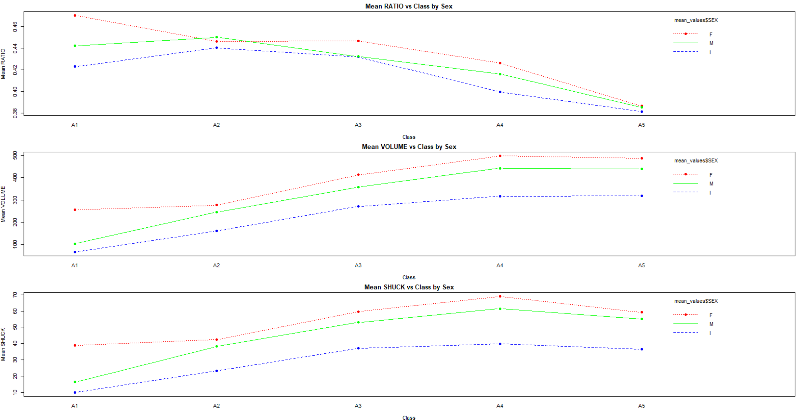
c) What questions do these plots raise? Consider aging and sex differences.
Do infants prioritize shell or other non-edible growth over muscle development?
Does the significant gap between infants and adults suggest a sharp transition in growth between life stages?
Does the lower shuck weight for infants indicate slower muscle development, and how does this impact their survival and growth?
At what point do infants transition to adult growth patterns, and do environmental factors affect this transition?
What factors contribute to the non-linear growth patterns? Are these driven by environmental conditions, genetics, or resource availability?
Why do females exhibit higher volumes and shuck weights?
How do growth patterns shift between infants and adults?
Why does the edible-to-whole weight ratio decline with higher classes?
d) Present four boxplots using par(mfrow = c(2, 2) or grid.arrange(). The first line should show VOLUME by RINGS for the infants and, separately, for the adult; factor levels “M” and “F,” combined. The second line should show WHOLE by RINGS for the infants and, separately, for the adults. Since the data are sparse beyond 15 rings, limit the displays to less than 16 rings. One way to accomplish this is to generate a new data set using subset() to select RINGS < 16. Use ylim = c(0, 1100) for VOLUME and ylim = c(0, 400) for WHOLE. If you wish to reorder the displays for presentation purposes or use ggplot2 go ahead.
Code:
# Subset the data to include only rows with RINGS < 16
filtered_data <- subset(mydata, RINGS < 16)
# New variable 'Group' to classify infants and adults
filtered_data$Group <- ifelse(filtered_data$SEX == "I", "Infant", "Adult")
# Set up a 2x2 plotting area
par(mfrow = c(2, 2), mar = c(4, 4, 2, 1)) # Adjust margins for layout
# 1st plot: VOLUME by RINGS for Infants
boxplot(VOLUME ~ RINGS, data = filtered_data[filtered_data$Group == "Infant", ],
main = "Volume by Rings (Infants)",
xlab = "Rings", ylab = "Volume",
ylim = c(0, 1100), col = "lightblue")
# 2nd plot: VOLUME by RINGS for Adults
boxplot(VOLUME ~ RINGS, data = filtered_data[filtered_data$Group == "Adult", ],
main = "Volume by Rings (Adults)",
xlab = "Rings", ylab = "Volume",
ylim = c(0, 1100), col = "lightgreen")
# 3rd plot: WHOLE by RINGS for Infants
boxplot(WHOLE ~ RINGS, data = filtered_data[filtered_data$Group == "Infant", ],
main = "Whole Weight by Rings (Infants)",
xlab = "Rings", ylab = "Whole Weight",
ylim = c(0, 400), col = "lightblue")
# 4th plot: WHOLE by RINGS for Adults
boxplot(WHOLE ~ RINGS, data = filtered_data[filtered_data$Group == "Adult", ],
main = "Whole Weight by Rings (Adults)",
xlab = "Rings", ylab = "Whole Weight",
ylim = c(0, 400), col = "lightgreen")
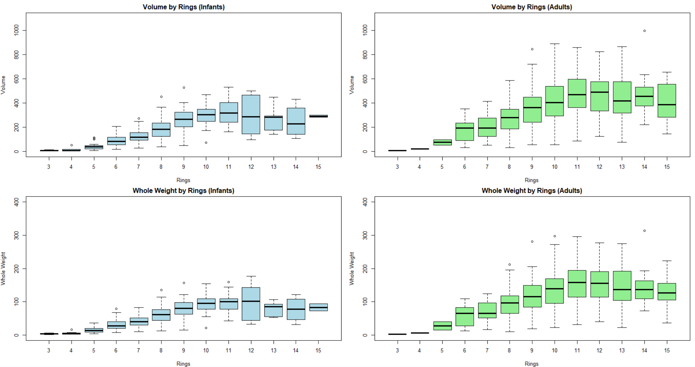
e) What do these displays suggest about abalone growth? Also, compare the infant and adult displays. What differences stand out?
Infants show smaller, more consistent growth, while adults show more variability and more outliers, especially beyond 8 rings. The plateau in growth after 10–12 rings suggests that abalones reach a stage where additional growth in volume and weight slows down. These findings reflect the natural growth patterns of abalones, with early rapid growth in infants and more variability in adults due to individual differences and environmental factors.
6) a) Based solely on these data, what are plausible statistical reasons that explain the failure of the original study? Consider to what extent physical measurements may be used for age prediction.
The variability, non-linearity, overlapping metrics, and presence of outliers all contribute to the difficulty of using physical measurements for accurate age prediction. Physical size alone is not sufficient for predicting the exact age of abalones. A more accurate model would likely require additional factors such as genetic data, environmental variables, or other biological indicators.
b) Do not refer to the abalone data or study. If you were presented with an overall histogram and summary statistics from a sample of some population or phenomenon and no other information, what questions might you ask before accepting them as representative of the sampled population or phenomenon?.
How was the sample collected?
Were there any missing values or outliers in the data?
What is the shape of the distribution?
Is the data clean and accurate?
Does the sample exclude any relevant sub-populations?
Are the summary statistics sufficient to describe the sample?
Is there any known or suspected bias in the sample?
c) Do not refer to the abalone data or study. What do you see as difficulties analyzing data derived from observational studies? Can causality be determined? What might be learned from such studies?
Variables not included in the study may influence both the independent and dependent variables, making it difficult to isolate effects. Selection Bias. Measurement Error. Incomplete or inaccurate data.
No, causality cannot be established directly from observational studies because:
Correlation does not imply causation: Observational studies only provide evidence of associations between variables.
Lack of randomization: Without random assignment, it’s impossible to ensure that observed changes are solely due to the variable of interest.
Identifying associations, generating hypotheses, and studying phenomena in natural settings are things that can be learned from such studies. Their insights often serve as a foundation for more rigorous experimental research, though analysts must carefully address biases, confounding factors, and measurement issues to draw meaningful conclusions.